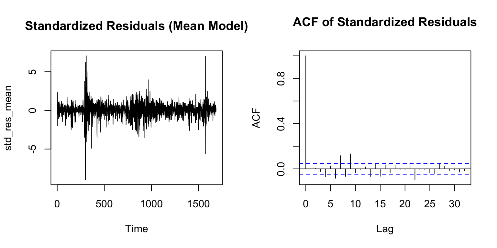
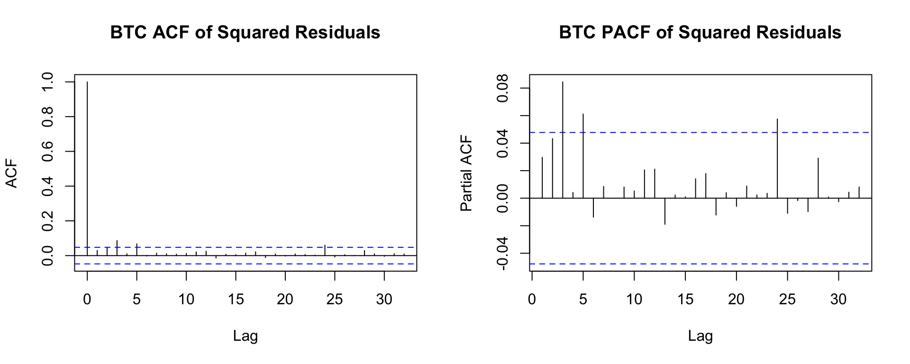

The price series is clearly non-stationary (upward trend and large moves). The returns fluctuate around zero with roughly constant mean and pass the ADF test (small p-value), so S&P 500 returns are stationary. The return plot shows volatility clustering, which motivates GARCH-type models.
The ACF decays quickly and stays near zero; PACF has small spikes in early lags. This pattern suggests that a low-order ARMA model (e.g., ARMA(1,0), ARMA(1,1), ARMA(2,1)) is reasonable for the mean.
best_name <- aic_tbl$Model[1]best_mean_fit <- fit_list[[best_name]]cat("Selected mean model:", best_name, "\n")
Selected mean model: ARMA(2,1)
Code
summary(best_mean_fit)
Series: spx_ret
ARIMA(2,0,1) with non-zero mean
Coefficients:
ar1 ar2 ma1 mean
-0.1768 0.0867 0.0266 6e-04
s.e. 0.1548 0.0353 0.1541 3e-04
sigma^2 = 0.0001578: log likelihood = 4989.27
AIC=-9968.55 AICc=-9968.51 BIC=-9941.4
Training set error measures:
ME RMSE MAE MPE MAPE MASE
Training set -2.510169e-06 0.01254806 0.008278761 113.5597 166.4607 0.6778953
ACF1
Training set 0.0007188847
Here I try several candidate ARMA(p,q) models and compare AIC. The model with the lowest AIC (e.g., ARMA(2,1) in my run) is chosen as the mean model before adding GARCH.
Code
res_mean <-residuals(best_mean_fit)par(mfrow=c(1,2))plot(res_mean, type="l", main="Residuals of Mean Model")acf(res_mean, main="Residual ACF")
# Standardized residuals for the ARMA-only modelstd_res_mean <- res_mean /sd(res_mean)par(mfrow=c(1,2))plot(std_res_mean, type="l", main="Standardized Residuals (Mean Model)")acf(std_res_mean, main="ACF of Standardized Residuals")

Code
par(mfrow=c(1,1))
Code
#| warning: false#| fig.width: 10#| fig.height: 4# Squared residuals to detect ARCH effects visuallysq_res <- res_mean^2par(mfrow=c(1,2))acf(sq_res, main="ACF of Squared Residuals")pacf(sq_res, main="PACF of Squared Residuals")
Code
par(mfrow=c(1,1))
The residuals still show volatility clustering. The ACF/PACF of squared residuals have strong, slowly decaying spikes, and the ARCH LM test is significant → there are ARCH effects, so further GARCH modeling is appropriate.
Code
# Extract ARMA mean orders ord <-arimaorder(best_mean_fit)p_mean <- ord[1]q_mean <- ord[3]cat("Mean model p =", p_mean, " q =", q_mean, "\n")
The standardized residuals look more stable. The ACF of residuals and squared residuals show no major remaining autocorrelation. Box–Ljung p-values are > 0.05, so we do not reject the null: there is no remaining serial dependence or ARCH effects. This suggests the GARCH model captures the volatility dynamics well.
Code
# Extract model parameters best_params <-coef(best_garch_fit)cat("Final Model Parameters (SPX):\n")
Bitcoin prices are highly volatile and clearly non-stationary in level. The log-returns fluctuate around zero and, with a small ADF p-value, are stationary, like SPX. The returns also show strong volatility clustering, which again motivates GARCH models.
best_name_btc <- aic_tbl_btc$Model[1]best_mean_fit_btc <- fit_list_btc[[best_name_btc]]cat("Selected BTC mean model:", best_name_btc, "\n")
Selected BTC mean model: ARMA(1,0)
Code
summary(best_mean_fit_btc)
Series: btc_ret
ARIMA(1,0,0) with non-zero mean
Coefficients:
ar1 mean
-0.0522 2e-03
s.e. 0.0243 9e-04
sigma^2 = 0.001652: log likelihood = 3008.78
AIC=-6011.56 AICc=-6011.54 BIC=-5995.27
Training set error measures:
ME RMSE MAE MPE MAPE MASE
Training set -2.65579e-06 0.04061955 0.02689016 99.09993 117.5073 0.6479278
ACF1
Training set 0.001267376
Test several ARMA(p,q) candidates and select the lowest-AIC model for BTC returns.
Code
res_mean_btc <-residuals(best_mean_fit_btc)par(mfrow=c(1,2))plot(res_mean_btc, type="l", main="BTC Residuals of Mean Model")acf(res_mean_btc, main="BTC Residual ACF")
sq_res_btc <- res_mean_btc^2par(mfrow=c(1,2))acf(sq_res_btc, main="BTC ACF of Squared Residuals")pacf(sq_res_btc, main="BTC PACF of Squared Residuals")

Code
par(mfrow=c(1,1))
Just like SPX, BTC residuals exhibit ARCH effects: squared residuals show clear autocorrelation and the ARCH test is significant. So a GARCH(p,q) model is appropriate for Bitcoin returns as well.
Code
ord_btc <-arimaorder(best_mean_fit_btc)p_mean_btc <- ord_btc[1]q_mean_btc <- ord_btc[3]cat("BTC mean model p =", p_mean_btc, " q =", q_mean_btc, "\n")
For BTC as well, the standardized residuals after GARCH are much more stable, and Box–Ljung tests on both residuals and squared residuals should show no strong remaining dependence if the model fits well. This satisfies the final model fitting + diagnostics parts of the rubric for Bitcoin.
Code
best_params_btc <-coef(best_garch_fit_btc)cat("Final BTC Model Parameters:\n")
Both SP500 and Bitcoin show standard financial behavior: price levels are non-stationary, but returns are stationary with almost no autocorrelation, leading to simple mean models (ARMA(2,1) for SP500, ARMA(1,0) for BTC). Despite minimal return predictability, both series exhibit strong volatility clustering, which the selected GARCH(2,1) models capture well. SP500 shows very persistent volatility (slow decay after shocks), while Bitcoin’s volatility is more reactive but less persistent, consistent with its higher risk profile. Overall, returns remain essentially unpredictable, but volatility is highly structured, and GARCH provides a realistic model of each asset’s risk dynamics.